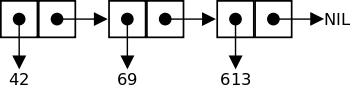

Why Functional Programming Matters
Paper by John Hughes
Presented by Andrew Sinclair
Author
John Hughes

Co-author
Haskell
Author
QuickCheck
No Relation...

Why FP Matters?
Structure
What is "Structured" software?
Easy to write
Easy to debug
Reusable
Emphasis on Modularity
Functional provides two glues:
Higher-order functions
Lazy evaluation
What is NOT in FP
Assignments
Side-effects
No flow of control
Glue #1 - Higher Order Functions
The Cons List
listof * ::= Nil | Cons * (listof *)
Cons 42 (Cons 69 (Cons 613 Nil ))
Notation
[42, 69, 613]
Nil is []
Summation Function
sum Nil = 0
sum (Cons n list) = n + sum list
In general... foldr
(foldr f x) Nil = x
(foldr f x) (Cons a l) = f a ((foldr f x) l)
Modular!
product = foldr (*) 1
anytrue = foldr (V) False
alltrue = foldr (^) True
Double Function
doubleall = foldr doubleandcons Nil
doubleandcons n list = Cons (2 * n) list
Notation - Composition
(f . g) h = f (g h)
Generalizing... fandcons
doubleandcons = fandcons double
double n = 2 * n
fandcons f el list = Cons (f el) list
or,fandcons f = Cons . f
In general... map
doubleall = foldr (Cons . double) Nil
doubleall = map double
giving us:
map f = foldr (Cons . f) Nil
Example of Map - Sum matrix
summatrix = sum . map sum
Not just lists... Trees!
treeof * ::= Node * (listof (treeof *))
foldtree
foldtree f g a (Node label subtrees) = f label (foldtree f g a subtrees)
foldtree f g a (Cons subtree rest) = g (foldtree f g a subtree) (foldtree f g a rest)
foldtree f g a Nil = a
Example - foldtree
sumtree = foldtree (+) (+) 0
maptree
maptree f = foldtree (Node . f) Cons Nil
Glue #2 - Lazy evaluation
Compose programs
f and g
(g . f) input
g (f input)
What if f is non-terminating?
Is Lazy good for non-fp?
No, because side-effects
Example - Newton-Raphson SQRT
ai+1 = (ai + n/ai)/2
If approximations converge
a = sqrt(n)
Infinite sequence of approx.
next n x = (x + n/x) / 2
repeat f a = Cons a (repeat f (f a))
repeat (next n) a0
Filter the list of approx.
within eps (Cons a (Cons b rest))
= b, if abs(a - b) <= eps
= within eps (Cons b rest), otherwise
Compose them together
sqrt a0 eps n = within eps (repeat (next n) a0)
Additional Examples - Omitted
Numerical Differentiation
Numerical Integration
Alpha-Beta Heuristic Algorithm
An example on refactoring
Alpha-Beta - Step 1
// Assume moves takes current state and returns all next states // Assume static takes a position and calculates a number reptree f a = Node a (map (reptree f) (f a)) gametree p = reptree moves p maximize (Node n sub) = max (map minimize sub) minimize (Node n sub) = min (map maximize sub) maximize (Node n Nil) = n maximize (Node n sub) = max (map minimize sub) minimize (Node n Nil) = n minimize (Node n sub) = max (map maximize sub) // this doesn't work on infinite trees... evaluate = maximize . maptree static . gametree
Alpha-Beta - Step 2
prune 0 (Node a x) = Node a Nil prune (n + 1) (Node a x) = Node a (map (prune n) x) // this will prune the search to depth 5 evaluate = maximize . maptree static . prune 5 . gametree
Alpha-Beta - Step 3
//Suppose we refactor:
//maximize = max . maximize'
//minimize = min . minimize'
minleq Nil pot = False
minleq (Cons n rest) pot = True, if n <= pot
= minleq rest pot, otherwise
omit pot Nil = Nil
omit pot (Cons nums rest)
= omit post rest, if minleq nums pot
= Cons (min nums) (omit (min nums) rest), otherwise
mapmin (Cons nums rest) = Cons (min nums (omit (min nums) rest)
maximize' (Node n Nil) = Cons n Nil
maximize' (Node n l) = mapmin (map minimize' l)
// This will ignore branches smaller than potential minima
evaluate = max . maximize' . maptree static . prune 8 . gametree
Alpha-Beta - Step 4
//Assume sort and not are defined. highfirst (Node n sub) = Node n (sort higher (map lowfirst sub)) lowfirst (Node n sub) = Node n (sort (not . higher) (map highfirst sub)) higher (Node n1 sub1)(Node n2 sub2) = n1 > n2 //This prioritizes branch expansion: evaluate = max . maximize' . highfirst . maptree static . prune 8 . gametree
Conclusions by Hughes
Modularity is key
Gluing solutions > scope rules
Conclusions by Andrew
Expressiveness
Easier to learn
Your turn!
Haskell
Clojure
Elixir
F#
You're still here?

Contact Info
- twitter: @Andy_CDandy
- email: andrew.george.sinclair@gmail.com
- github: github.com/AndrewSinclair